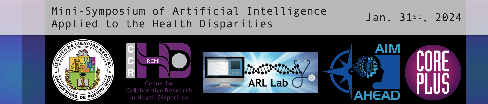
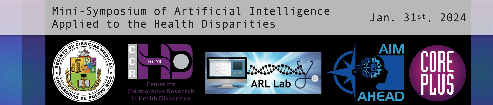

Applying Artificial Intelligence to Address Health Disparities in Puerto Rico
February 27, 2024 - Authored by: Damian E. Santiago-Muñoz | Osvaldo D. Rivera-González
Artificial intelligence (AI) and machine learning (ML) are currently disrupting the healthcare industry, with the potential to address significant gaps in health disparities. Therefore, to acknowledge the impact of AI/ML and to address its challenges, a Mini-Symposium of Artificial Intelligence Applied to the Health Disparities was hosted by Dr. Abiel Roche-Lima, Assistant Professor and Principal Investigator of the ARL Lab for Biomedical Data Science part of the Integrated Informatics Services (IIS) core and Center for Collaborative Research in Health Disparities (RCMI-CCRHD) of the University of Puerto Rico Medical Sciences Campus. During the symposium, Jamboor K Vishwanatha, Principal Investigator at the AIM-AHEAD Coordinating Center, first delivered insights into the practical challenges and opportunities within this field. Then, Lavanya Vishwanatha, Director of Enterprise Research Solutions, informed us about preparing a diverse AI/ML workforce to achieve health equity. Later, Mariano de Socarraz, President of CorePlus Clinical and Pathological Services and President of Syndeo LLC, elaborated on how his company is leveraging AI to bolster operations. Finally, Dr. Kenneth W. Goodman, Director of IDSC data Ethics Society, presented standards for managing AI’s high stakes moral complexity. Overall, the presenters presented a holistic view to implementation and management of AI in healthcare practices.

Photo: Entities enabling AI/ML discussions are the mini-symposium.
Jamboor Vishwanatha began by highlighting the issue of bias in machine learning algorithms, expressing its potential impact on healthcare outcomes. He underscored the importance of mitigating bias to ensure the relevance and accuracy of insights derived from AI and ML technologies. Some actionable steps to combat bias, including the need for diverse and well-represented datasets, fair algorithmic models and community engagement strategies. To make sure the algorithm is a complete study of the societies and are as correct as possible; it is important to make sure that all communities are being included in our datasets and are correct information. Through initiatives like the NIH’s AIM AHEAD (Artificial Intelligence/Machine Learning Consortium to Advance Health Equity and Researcher Diversity), which focuses on empowering minority communities in healthcare research, practical solutions are being developed to address issues of data ownership, privacy, and inclusivity.
Lavanya Vishwanatha further elucidated practical strategies employed within the AIM AHEAD Coordinating Center and information of the courses and programs that are available. First, these departments are the center's four cores, Administration/Leadership, Data Science Training, Data and Research, and Infrastructure; she provided a practical framework for orchestrating collaborative efforts in AI and ML research. Additionally, Lavanya highlighted accessible programs and resources that AIM AHEAD provides, such as unconscious bias training and research fellowships, aimed to aid a culture of inclusivity and innovation in healthcare AI/ML endeavors. These courses could help you with generating and using large datasets to use an algorithm that helps advising in the science of minority health and health disparities.

Photo: CorePlus pathologist using AI-driven markers in diagnostic procedures. (Source: https://corepluspr.com)
Mariano de Socarraz, through CorePlus, showcased the tangible impact of AI deployment in digital pathology diagnostics. By spearheading the Galen AI Deployment Process, Socarraz outlined a meticulous journey encompassing calibration, validation, and deployment phases. Crucially, he emphasized that AI serves to augment rather than supplant human expertise in pathology, acting as a vigilant assistant rather than a replacement. With groundbreaking solutions like the Galen Prostate AI, which boasts 100% AI quality control, Core Plus has achieved remarkable milestones in enhancing diagnostic accuracy. Moreover, strategic partnerships with industry leaders like IBEX, Alpenglow, and Ataraxis underscore Core Plus's commitment to collaborative innovation. Socarraz's assertion that validated AI technologies should be implemented in clinical practice for the continuing benefit of the patient and the healthcare providers underscores the transformative potential of AI.
Building upon Socarraz's insights, Dr. Goodman then elaborated on the ethical complexities surrounding the integration of AI into high-stakes medical decision-making. Acknowledging the allure of AI assistance in streamlining diagnostic processes, Goodman cautioned against overlooking the irreplaceable role of human observation and judgment. Quoting Lane's prescient observation from 1936, Goodman underscored the enduring importance of human intuition in medical examinations, even in the age of AI. Crucially, Goodman highlighted the need for rigorous ethical frameworks and standards to guide the responsible deployment of AI in healthcare. By emphasizing the importance of comparative outcomes, safety analyses, and intellectual property management, Goodman emphasized the need for robust protocols to ensure the ethical and effective utilization of AI technologies. Leveraging standards organizations such as HL7, ISO, and IEEE can facilitate the seamless integration of AI into healthcare workflows while safeguarding patient well-being and preserving the integrity of medical practice.

Photo: Entities enabling AI/ML discussions are the mini-symposium.
Jamboor Vishwanatha began by highlighting the issue of bias in machine learning algorithms, expressing its potential impact on healthcare outcomes. He underscored the importance of mitigating bias to ensure the relevance and accuracy of insights derived from AI and ML technologies. Some actionable steps to combat bias, including the need for diverse and well-represented datasets, fair algorithmic models and community engagement strategies. To make sure the algorithm is a complete study of the societies and are as correct as possible; it is important to make sure that all communities are being included in our datasets and are correct information. Through initiatives like the NIH’s AIM AHEAD (Artificial Intelligence/Machine Learning Consortium to Advance Health Equity and Researcher Diversity), which focuses on empowering minority communities in healthcare research, practical solutions are being developed to address issues of data ownership, privacy, and inclusivity.
Lavanya Vishwanatha further elucidated practical strategies employed within the AIM AHEAD Coordinating Center and information of the courses and programs that are available. First, these departments are the center's four cores, Administration/Leadership, Data Science Training, Data and Research, and Infrastructure; she provided a practical framework for orchestrating collaborative efforts in AI and ML research. Additionally, Lavanya highlighted accessible programs and resources that AIM AHEAD provides, such as unconscious bias training and research fellowships, aimed to aid a culture of inclusivity and innovation in healthcare AI/ML endeavors. These courses could help you with generating and using large datasets to use an algorithm that helps advising in the science of minority health and health disparities.
Photo: CorePlus pathologist using AI-driven markers in diagnostic procedures. (Source: https://corepluspr.com)
Mariano de Socarraz, through CorePlus, showcased the tangible impact of AI deployment in digital pathology diagnostics. By spearheading the Galen AI Deployment Process, Socarraz outlined a meticulous journey encompassing calibration, validation, and deployment phases. Crucially, he emphasized that AI serves to augment rather than supplant human expertise in pathology, acting as a vigilant assistant rather than a replacement. With groundbreaking solutions like the Galen Prostate AI, which boasts 100% AI quality control, Core Plus has achieved remarkable milestones in enhancing diagnostic accuracy. Moreover, strategic partnerships with industry leaders like IBEX, Alpenglow, and Ataraxis underscore Core Plus's commitment to collaborative innovation. Socarraz's assertion that validated AI technologies should be implemented in clinical practice for the continuing benefit of the patient and the healthcare providers underscores the transformative potential of AI.
Building upon Socarraz's insights, Dr. Goodman then elaborated on the ethical complexities surrounding the integration of AI into high-stakes medical decision-making. Acknowledging the allure of AI assistance in streamlining diagnostic processes, Goodman cautioned against overlooking the irreplaceable role of human observation and judgment. Quoting Lane's prescient observation from 1936, Goodman underscored the enduring importance of human intuition in medical examinations, even in the age of AI. Crucially, Goodman highlighted the need for rigorous ethical frameworks and standards to guide the responsible deployment of AI in healthcare. By emphasizing the importance of comparative outcomes, safety analyses, and intellectual property management, Goodman emphasized the need for robust protocols to ensure the ethical and effective utilization of AI technologies. Leveraging standards organizations such as HL7, ISO, and IEEE can facilitate the seamless integration of AI into healthcare workflows while safeguarding patient well-being and preserving the integrity of medical practice.
The RIVERA-OMICS laboratory was thrilled to attend the mini-symposium. It was an opportunity to learn about local AI/ML efforts, bolster our network with new potential partnerships, and reconnect with our friends at the ARL Lab.
Authored by:

About RIVERA-OMICS:
OMICS (Omics Molecular Innovations and Commercialization Strategies), is an entity built to develop omics-focused academic research projects and investigate the commercial landscape of novel biotechnologies and biomedicines. OMICS is a branch of RIVERA Initiatives Inc, a non-profit organization that seeks to empower academia through comprehensive resources and collaborative research endeavors to advance educational excellence and innovation.
For inquiries, please contact:
research@riveraomics.org